1. Introducción y Objetivos
La empresa de desarrollo de juegos Micrati ha decidido apostar por el desarrollar un juego en formato webapp basado en el "Juego Y", que tendrá el nombre YOVI 2B. Estamos ante un juego de mesa de estrategia de dos jugadores que transformaremos y modificaremos para que se pueda jugar con el ordenador.
1.1. Resumen de Requisitos
El sistema debe cumplir con las siguientes funcionalidades principales:
-
Frontend Web: Permitir a las personas jugar partidas del juego Y a través del navegador.
-
Versión Clásica: Implementar el juego contra la máquina con un tamaño de tablero variable, esto se definirá con "Dificultad" o "Tamaño" según se juegue contra un bot o un jugador local respectivamente.
-
Estrategias de BOT: El juego contra la computadora debe implementar más de una estrategia seleccionable que seguirá el bot contra el que se juegue. En nuestro caso, se han implementado 6: Random, Ofensiva, Defensiva y estrategia que usa el algoritmo de MonteCarlo, que tiene 3 variaciones que aumenta la dificultad.
-
Niveles de Dificultad: El jugador podrá elegir el nivel de dificultad de las estrategias. Como lo mencionado antes, esto inidica el tamaño de los tableros exclusivamente al jugar contra un bot.
-
Despliegue: La aplicación deberá estar desplegada y ser accesible de forma pública en la Web. Podemos seguir el siguiente enlace: http://gameyes2b.duckdns.org/.
-
Gestión de Usuarios: Registro en el sistema y consulta de histórico. Esto significa que se pueden crear usuarios, para registrar las estadísticas y guardarlas, para poder verlas y hacer un ranking de todos los usuarios.
-
API Documentada: Se refiere a una interfaz que permite que los bots con las estrategias para que puedan interactuar con el juego y la gestión de usuarios y partidas.
-
Modo Bot: El API expondrá un método
playcon notación YEN para que un bot ajeno a nosotros juegue contra la aplicación.
1.2. Objetivos de Calidad
| Objetivo | Descripción |
|---|---|
Funcionalidad |
El sistema cumple con las necesidades esperadas de juego y gestión. |
Mantenibilidad |
El sistema se puede adaptar y/o modificar fácilmente ante cambios en el entorno o requisitos. |
Usabilidad |
La aplicación ha de poder ser utilizada con facilidad por cualquier usuario. |
Escalabilidad |
La aplicación tiene que poder ser usada en varios dispositivos al mismo tiempo. |
1.3. Stakeholders
| Rol | Nombre / Contacto | Expectativas |
|---|---|---|
Equipo de desarrolladores |
Iyán Iglesias Ibaseta (https://github.com/iyaniglesias) |
Desarrollar YOVI con las herramientas adecuadas, cumpliendo los requisitos y asegurando que permita a los usuarios competir y conseguir una puntuación en base a la partida jugada. |
Jimena Vázquez Suárez (https://github.com/JimenaVazquez) |
||
Sara Naredo Fernández (https://github.com/saranaredo) |
||
Compañía |
Micrati |
Cumplir y dictar los requisitos del juego para presentar la aplicación. |
Usuarios |
Futuros usuarios del juego YOVI |
Aprender y disfrutar del juego YOVI, logrando entretenimiento, competición sana y ocio de la aplicación. |
Equipo de supervisión |
José Emilio Labra Gayo |
Evaluar el resultado y aconsejar durante el desarrollo de la aplicación. |
Celia Melendi Lavandera |
2. Restricciones de Arquitectura
Entendemos por restricciones los elementos que influyen sobre un proyecto y que limitan en algún sentido las decisiones técnicas, de diseño, organización, etc. En este apartado se describen las restricciones impuestas en este proyecto.
2.1. Restricciones Técnicas
| Restricción | Descripción |
|---|---|
Entorno tecnológico |
Usaremos VisualCode y/o IntelliJ ya que ofrece sencillez en cuanto al manejo de GitHub (uso reflejado más adelante), además, este entorno ya nos era conocido gracias al uso en otras asignaturas. |
Front-end |
Para la programación front-end se usará React. Esta biblioteca favorece la construcción de interfaces mediante el lenguaje JavaScript. |
Back-end → Juego |
En cuanto a programar el back-end usaremos el lenguaje Rust. Lenguaje compilado de alto rendimiento desarrollado por ingenieros de Mozilla. |
Back-end → Base de datos |
En cuanto a la comunicación con la base de datos usaremos NodeJs. Este entorno de ejecución que usa JavaScript para la comunicación de nuestra app con la base de datos, comentada a continuación. |
Despliegue |
Usamos la plataforma de Docker, que nos permitirá ejecutar y gestionar la aplicación de forma sencilla. Para contener las aplicaciones que se usarán en las diversas partes del proyecto, usaremos Amazon Web Services (AWS) para tener este contenedor en la nube. |
Base de datos |
Nos decidimos por MongoDB, ya que, aunque no es una base de datos relacional, es más sencilla tanto de montar al servidor como para aprender desde cero respecto a otras opciones barajadas. |
Organización grupal |
Para la capacidad de realizar tareas se usará GitHub. Para más información, lea el apartado de restricciones organizativas. |
2.2. Restricciones Organizativas
| Restricción | Descripción |
|---|---|
Reparto de trabajo |
Mediante la sección de Issues de GitHub, nos dividiremos las tareas, historias de usuario, etc. Se les llamará "Issues" y se irán asignando y finalizando en las reuniones semanales (hechas en clase) |
Revisión de trabajo |
También usando GitHub nos revisaremos unos a otros nuestro trabajo mediante pull requests. De esta forma, todos entenderemos más de lo que hicieron otros compañeros, y podremos notar errores que los anteriores pudieron pasar por alto. Para esta revisión, usamos un algoritmo circular: → Sara revisa a Jimena; → Jimena revisa a Iyán; → Iyán revisa a Sara |
Reuniones |
Se realizarán reuniones, al menos una vez a la semana en la duración del proyecto (hechas en clase), para la decisión y organización de ciertos puntos. De estas quedará constancia en actas recogiendo lo sucedido, hablado y decidido en ellas en la sección "Wiki" de GitHub. |
2.3. Convenios
| Convenio | Descripción |
|---|---|
Documentación |
Seguiremos el formato pedido por la asignatura de Arc42. |
Idioma |
Durante todo el proyecto, documentación y comentarios usaremos el idioma español, por facilidad para los desarrolladores del equipo. En el proyecto prueba dado, los comentarios estaban en inglés, por lo que los dejamos así. |
Implementación |
Se usará la nomenclatura camelCase, ya que es la más usada entre el equipo. |
3. Contexto y Alcance
3.1. Contexto general
YOVI es una plataforma web diseñada por la empresa Micrati para jugar a diferentes variantes del JUEGO Y, inspiradas en juegos de tablero estratégicos como Go o Hex, permitiendo a los usuarios enfrentarse entre sí o contra la máquina, con un tablero de tamaño variable y reglas específicas según la variante seleccionada.
El sistema gestiona usuarios registrados, permite consultar estadísticas de partidas, y soporta la selección de estrategias y niveles de dificultad para el juego contra la máquina.
Los principales objetivos de YOVI son los siguientes:
-
Proporcionar una experiencia de juego fluida y coherente, garantizando que cada acción del jugador se valide correctamente y se refleje en el estado del tablero de forma inmediata.
-
Fomentar enfrentamientos amistosos con partidas multijugador (2 jugadores) y con un ranking de usuarios a partir de la puntuación obtenida.
-
Contribuir al entretenimiento y al desarrollo estratégico por las reglas del juego, fácil de entender gracias a la interfaz.
El alcance inicial del sistema se centra en la versión clásica del juego Y, con partidas de un jugador contra la máquina y soporte para diferentes estrategias y niveles de dificultad. Además de que cada usuario puede visualizar estadísticas sobre sus propias partidas. También se ha decidido implementar algunas funcionalidades avanzadas como por ejemplo permitir jugar jugador vs jugador de forma local (mismo oredenador) o poder ver un ranking complejo de usuarios global.
3.2. Contexto técnico
YOVI 2B se desarrolla como una aplicación web compuesta por distintos módulos y múltiples tecnologías. Esto se refiere al uso de varios microservicios, donde cada caso se centrará en su función y en la comunicación con el resto, haciendo repose poca carga sobre cada parte.
Los componentes principales de la aplicación son:
-
El frontend web: Desarrollado en React, hace que la aplicación se pueda ejecutar en el navegador. También se encarga de la presentación visual del juego, es decir, de la interfaz; la gestión de interacciones de los jugadores y la comunicación con el backend.
-
El backend: Se divide en dos microservicios independientes que gestionan distintas responsabilidades del sistema. El microservicio de GameY, en Rust, que tiene por función el manejo del juego como tal, los turnos del juego, los bots y sus estrategias, etc. El otro microservicio es el que maneja los usuarios, aquí, usaremos Node.js, que resultará más sencillo para la cominucación con la base de datos.
-
La persistencia de datos: Se realiza mediante MongoDB, que almacena la información de los usuarios con sus partidas y resultados. Elegimos el modelo noSQL por la facilidad de despliegue y la capacidad de ver los datos en tiempo real.
-
La comunicación entre frontend y backend: Se realiza mediante mensajes JSON siguiendo la notación YEN. Esta notación permite representar de manera precisa la situación de cada partida en un instante dado, facilitando tanto la interacción con la interfaz web como la integración con bots a través del API.
-
El sistema se despliega en un entorno contenerizado: Mediante Docker, lo que asegura reproducibilidad y consistencia en el entorno de ejecución. La aplicación se ejecuta en una máquina virtual en la nube, proporcionando disponibilidad remota y facilitando el acceso para usuarios y pruebas.
La comunicación se realiza mediante una API REST que intercambia mensajes JSON. Esta arquitectura modular y distribuida permite que el sistema sea escalable y extensible para futuras versiones que incluyan variantes adicionales del juego, soporte para varios jugadores o funcionalidades opcionales avanzadas.
4. Estrategia de solución
Este apartado trata de justificar las principales decisiones del diseño del sistema de forma que se cumplan los requisitos funcionales y los atributos de calidad establecidos, en este caso el desarrollo del juego. Por las características del juego, nos hemos centrado en garantizar coherencia, claridad y robustez en lugar de información constante en tiempo real.
4.1. Decisiones tecnológicas
La arquitectura general del sistema se basa en una separación estricta entre presentación, lógica de negocio y persistencia. El frontend es responsable de la visualización del tablero, la interacción del usuario y la representación del estado actual de la partida. El backend, centraliza toda la lógica del juego, incluyendo la validación de movimientos, la gestión de turnos y la determinación del resultado final.
Se han usado muchas otras tecnologías, entre ellas:
-
React: Para el frontend, una de las principales bibliotecas de JavaScript para construir interfaces de usuario. Permite la representación del tablero con componentes independientes.
-
Rust: Para el backend, lenguaje de programación que garantiza rendimiento y seguridad.
-
Node.js: Entorno de ejecución de JS caracterizado por su rendimiento y seguridad que será usado para el juego.
-
MongoDB: Base de datos no relacional. Más intuitiva y sencilla de montar en el servidor, además de estar orientada a JSON, que facilita la implementación.
-
Docker: Para el despliegue del sistema.
-
AWS: Aplicación donde se alojará una máquina virtual para la disponibilidad remota.
-
CSS: Lenguaje de programación en el que se definirán los estilos y el aspecto de la interfaz en un documento.
-
GitHub: Servicio web en la nube donde se subirán las distintas versiones, cambios, reuniones, decisiones, … en torno a la aplicación.
-
Gatling: Software que se usará para las pruebas de carga del juego.
4.2. Decisiones sobre los objetivos de calidad
Los principales objetivos de calidad para el juego son el rendimiento, la consistencia y fiabilidad, la mantenibilidad y la usabilidad, además de la seguridad:
-
Rendimiento: Se espera principalmente minimizar tiempos de respuesta de para que la experiencia de juego resulte fluida y con interrupciones mínimas tras cada movimiento, por lo que se buscara que el sistema procese los movimientos de forma prácticamente inmediata desde la perspectiva del usuario, evitando retrasos que puedan romper la dinámica del turno. No será necesario el acceso constante a la base de datos, lo que reducirá la latencia.
-
Consistencia y fiabilidad: El objetivo principal es garantizar que el estado del tablero sea siempre único, coherente y compartido entre ambos jugadores, impidiendo movimientos ilegales y asegurando el cumplimiento de las reglas. Evitando inconsistencias en el backend, se espera también como objetivo de calidad que el jugador no pueda alterar el estado del juego fuera de su turno, que también será consistente.
-
Mantenibilidad: Se busca que el sistema pueda modificarse sin afectar profundamente a varias partes del código. Ya sea por incluir nuevas características o cambiar las ya existentes, los cambios deben poder implementarse de manera controlada y localizada, estando el juego adaptado y con una clara separación entre backend y frontend. También es importante el bajo acoplamiento y la gran cohesión para alcanzar este objetivo, así como la documentación.
-
Usabilidad: Tratando que los jugadores entiendan completamente el juego con su interfaz, se buscará evitar la sobrecarga cognitiva y se priorizará retroalimentación, representación clara del turno o el movimiento hecho y un tablero simple pero comprensible. La interfaz del juego será clara, intuitiva y familiar para el usuario para conseguir esto.
-
Robustez y seguridad: El objetivo es que el sistema resista comportamientos inesperados o intentos de manipulación. Se espera evitar que el jugador pueda alterar directamente el tablero o que los puntos ganados sean inconsistentes. Además, el juego debe ser capaz de gestionar situaciones como desconexiones, intentos de jugadas inválidas, …
5. Vista de bloques
En este apartado veremos una versión estática del proyecto. Se tienen que ver una visión principal del proyecto de forma que se puedan simplificar mediante un diagrama donde se puedan ver los componentes principales (clases, módulos, paquetes, …) y las dependencias entre ellos (relaciones, asociaciones, interacciones, …).
La arquitectura de YOVI se organiza siguiendo un modelo modular basado en microservicios. Cada componente del sistema tiene responsabilidades claramente definidas, permitiendo separar la lógica de presentación, la lógica de negocio y la persistencia de datos. Esta separación facilita la mantenibilidad del sistema, y facilita el trabajo en caso de que sea necesario evolucionar cada componente de forma independiente.
5.1. Nivel 1 – Visión general del sistema
A alto nivel, el sistema está compuesto por cuatro bloques principales, uno de frontend, dos de backend y uno de persistencia:
-
Frontend web
-
Microservicio User
-
Microservicio GameY
-
Base de datos
Estos componentes interactúan entre sí mediante API REST (modelo, servicio y controlers) y mensajes en formato JSON.
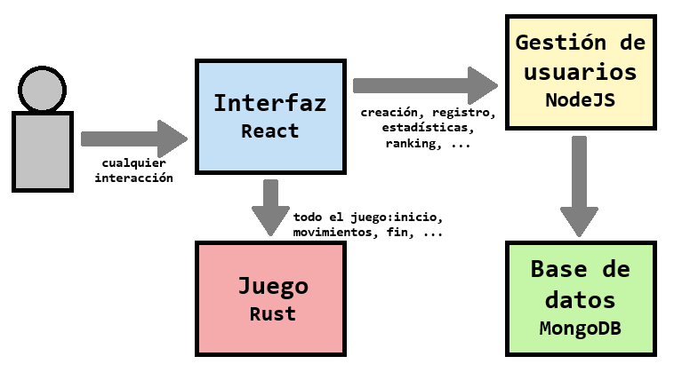
5.1.1. Frontend Web: WEBAPP
El frontend es una aplicación web desarrollada en React y que es ejecutada en el navegador del usuario. Divide el códgio en screens y componentes, que interactúan directamente con los controllers del juego
Sus responsabilidades principales son:
-
Mostrar la interfaz del juego.
-
Representar el tablero y las fichas.
-
Gestionar las acciones del usuario (movimientos, selección de estrategias, inicio de partidas) para que se reflejen en el tablero.
-
Enviar solicitudes al controller por los endpoints del backend (tanto para el juego como para la gestión de usuarios).
-
Mostrar los resultados y el estado actualizado de la partida, las estadísticas y ranking.
El frontend no contiene lógica del juego. Toda la validación de movimientos y cálculo del estado del tablero se delega al backend para garantizar la integridad de las partidas.
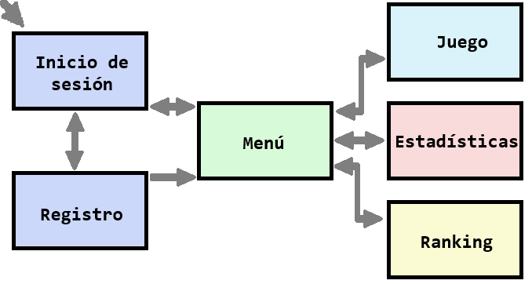
5.1.2. Microservicio User
El microservicio User está implementado en Node.js y se encarga de gestionar toda la información relacionada con los usuarios del sistema. Este servicio se basa en una API REST que permite al frontend consultar o modificar información relacionada con los jugadores.
Entre sus responsabilidades se incluyen:
-
Controlar el registro y gestión de usuarios.
-
Consulta y gestión de estadísticas de juego.
-
Consulta y gestión del ranking de partidas.
-
Gestión de la información de perfil del jugador.
5.1.3. Microservicio GameY
El microservicio GameY está desarrollado en Rust y contiene toda la lógica principal del juego. De nuevo gracias a la API REST usada el frontend envia el estado actual de una partida y recibe como respuesta el nuevo estado del tablero o el siguiente movimiento calculado. Al ser la parte que determina el estado del tablero, se asegura de prevenir que el usuario pueda corromper el juego.
Sus responsabilidades son:
-
Validar los movimientos realizados por los jugadores.
-
Gestionar el turno de juego.
-
Determinar si una partida ha finalizado.
-
Calcular el siguiente movimiento cuando se juega contra la máquina.
-
Implementar diferentes estrategias y niveles de dificultad para la inteligencia artificial.
Para representar el estado del juego se utiliza la notación YEN, que permite describir de forma compacta la situación del tablero.
5.1.4. Base de Datos
El sistema utiliza MongoDB como sistema de persistencia. Se trata de una base de datos NoSQL orientada a documentos, adecuada para almacenar estructuras de datos flexibles como partidas de juego y estadísticas.
La base de datos almacena los usuarios registrados, con sus partidas jugadas y ganadas, que se usarán para las estadísticas y ranking.
El resto de microservicios se comunican con el microservicio de NodeJs, que manejará la conexión con la base de datos, que almacena los datos, y recuperará la información necesaria para su funcionamiento.
5.1.5. Esquema del sistema
Este es el esquema del juego completo: image::yovi-estructura.png[componentes-yovi]
5.2. Nivel 2 – Descomposición interna de los bloques
Este apartado se centra en detallar la estructura interna de los principales componentes del sistema. El objetivo de este nivel es mostrar cómo se separan las distintas capas de la aplicación, distinguiendo claramente entre los componentes responsables de la interfaz de usuario, los responsables de implementar la lógica de negocio y los encargados de gestionar los datos del juego.
5.2.1. Frontend
El frontend actúa principalmente como una capa de presentación, delegando la lógica de negocio y la validación de las reglas del juego en los servicios backend. Así, lograr una arquitectura clara y evitar que el cliente deba controlar los aspectos críticos es posible.
El frontend puede dividirse internamente en varios módulos:
-
Interfaz de usuario: encargados de representar el tablero, el menú y los elementos visuales de la aplicación.
-
Gestión de estado: control del estado actual de la partida y de la sesión del usuario.
-
Peticiones del cliente: módulo encargado de realizar las peticiones HTTP a los microservicios backend, comunicandose con los controllers.
5.2.2. Microservicio User
Este microservicio se compone de los siguientes módulos internos:
-
Controladores API: reciben las peticiones REST y gestionan las respuestas.
-
Lógica de negocio de usuarios: implementa las operaciones relacionadas la gestión de usuarios y estadísticas.
-
Acceso a datos: es el encargado de interactuar con la base de datos MongoDB: crear usuarios, iniciar sesión, …
5.2.3. Microservicio GameY
Está organizado en las siguientes partes internas:
-
Motor de juego: implementa las reglas de gameY.
-
Validador de movimientos: verifica que los movimientos realizados sean válidos.
-
Gestor de partidas: mantiene el estado actual de cada partida.
-
Módulo de estrategias: calcula el siguiente movimiento del bot según el nivel de dificultad y la estrategia elegidas.
Esta organización permite modificar o añadir nuevas estrategias de juego sin afectar al resto del sistema.
5.2.4. Beneficios de la arquitectura
Las principales ventajas que proporciona la estructura elegida son:
-
Separación clara de responsabilidades - como cada componente tiene una responsabilidad bien definida, se facilita el mantenimiento del sistema y reduce el acoplamiento entre componentes..
-
Escalabilidad, permitiendo desplegar y escalar cada microservicio de manera independiente, lo que permitira por ejemplo crear varias instancias del juego
-
Flexibilidad tecnológica, ya que cada servicio puede desarrollarse con el lenguaje más adecuado según sus necesidades.
-
Extensibilidad, permitiendo añadir nuevas funcionalidades o variantes del juego sin rediseñar el sistema completo.
-
Despliegue reproducible , ya que el uso de contenedores Docker permite ejecutar el sistema en diferentes entornos de forma consistente.
5.3. Nivel 3: Interfaces entre componentes
Los componentes del sistema se comunican entre sí mediante las interfaces basadas en servicios web y mensajes, que también contribuyen al desacoplamiento y la separación de responabilidades.
Las principales interfaces del sistema son las siguientes.
5.3.1. Interfaz Frontend – Microservicio User
Esta interfaz permite realizar operaciones de registro de usuarios, información del perfil, consulta de estrategias del juego:
Las peticiones se realizan mediante HTTP y utilizan mensajes en formato JSON para el intercambio de datos. Algunas de las operaciones disponibles son:
-
POST /loginuser - iniciar sesión con un usuario existente
-
GET /users/{id} - obtener información de un usuario.
-
POST /createuser - crea un nuevo usuario, validando que no exista
-
POST /initmatch - creación de una partida vs bot propio
-
POST /endmatch - finalización de una partida ganada vs bot, para más sencillez a la hora de estadísticas y ranking
-
POST /allstats - recuperación de las estadísticas totales
-
POST /diffstats - recuperación de las estadísticas por dificultad (tamaño de tablero)
-
POST /stratstats - recuperación de las estadísticas por estrategia (del bot contra el que se juegue)
-
GET /ranking/wins - recuperación del ranking por partidas ganadas (vs bot propio)
-
GET /ranking/defeats - recuperación del ranking por partidas perdidas (vs bot propio)
-
POST /ranking/wins/difficulty - recuperación del ranking por partidas ganadas por dificultad (vs bot propio)
-
POST /ranking/wins/strategy - recuperación del ranking por partidas ganadas por estrategia (vs bot propio)
-
Existen también métodos que no se podrán acceder por usuarios normals, y existen solo para realización de pruebas y tests de la aplicación
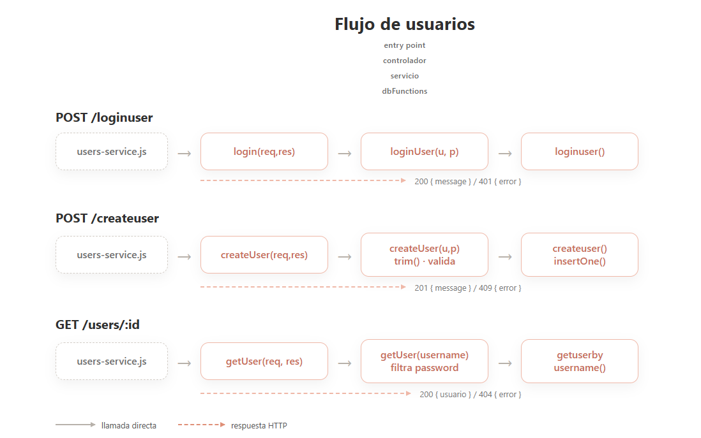
5.3.2. Interfaz Frontend – Microservicio GameY
El frontend interactúa con el microservicio GameY para gestionar el desarrollo de las partidas gracias a la API REST . La información de la partida se representa mediante la notación YEN, que describe el tamaño del tablero, el turno actual y la disposición de las piezas.
5.3.3. Interfaz de acceso a datos
Los microservicios del sistema acceden a la base de datos de MongoDB para almacenar y recuperar la información persistente. Entre las principales operaciones destacan el almacenamiento de usuarios ya registrados, el registro de las partidas jugadas, la consulta de estadísticas del juego o del ranking, …
El acceso a la base de datos se realiza a través de los métodos de acceso a datos definidos dentro de cada microservicio, evitando que otros componentes interactúen directamente con la base de datos.
5.4. Diagrama de clases
Vemos en la siguiente imagen el diagrama de clases de este proyecto. image::gamey_uml.png[gamey_uml]
6. Vista en tiempo de ejecución
Este apartado describe cómo interactúan los componentes del sistema durante su funcionamiento. Para cada flujo se especifican los actores implicados, las llamadas HTTP realizadas y los datos intercambiados.
Los componentes que participan son:
-
Webapp: frontend React ejecutado en el navegador del usuario.
-
Users Service: microservicio Node.js en el puerto 3000.
-
GameY Service: microservicio Rust en el puerto 4000.
-
MongoDB: base de datos NoSQL de persistencia.
6.1. Registro e inicio de sesión
El registro crea un nuevo usuario en MongoDB comprobando previamente que el nombre no esté en uso. El inicio de sesión verifica las credenciales y habilita el acceso a las funcionalidades del juego.
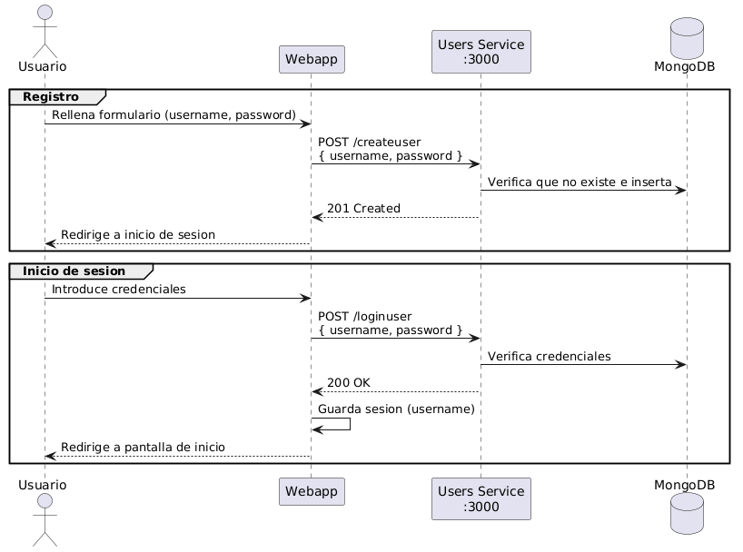
6.2. Flujo de una partida completa
Al iniciar una partida, el microservicio de usuarios registra el evento en MongoDB y GameY crea la sesión de juego en memoria. Los movimientos del jugador y las respuestas del bot se resuelven íntegramente en GameY sin acceder a la base de datos. Al terminar, el resultado se persiste en MongoDB y la sesión de juego se elimina de GameY.
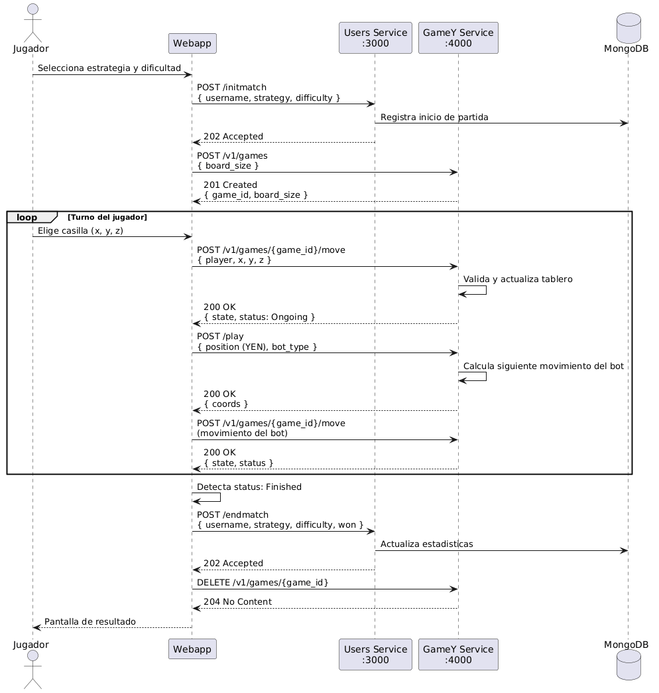
6.3. Consulta de estadísticas y ranking
Las estadísticas y el ranking se obtienen directamente de MongoDB a través del microservicio de usuarios. No interviene GameY en este flujo.
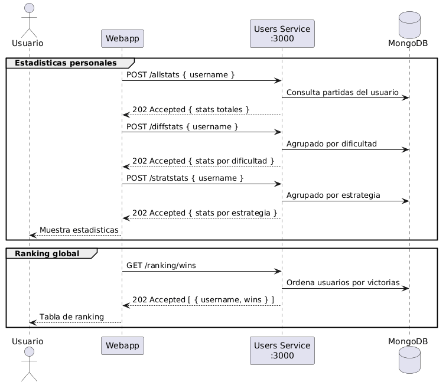
7. Vista de despliegue
Este apartado describe la infraestructura sobre la que se ejecuta el sistema y cómo se distribuyen los componentes software sobre ella.
7.1. Infraestructura
El sistema se despliega en una máquina virtual en la nube accesible públicamente en gameyes2b.duckdns.org. Todos los componentes corren como contenedores Docker orquestados con Docker Compose y se comunican a través de una red interna bridge llamada monitor-net. La base de datos MongoDB no está contenerizada: se utiliza un servicio externo (MongoDB Atlas) cuya URI de conexión se inyecta como variable de entorno.
| Componente | Puerto expuesto | Descripción |
|---|---|---|
webapp (React + Nginx) |
80 |
Frontend servido por Nginx. Construido con las URLs de los backends como variables de entorno en tiempo de compilación. |
users (Node.js / Express) |
3000 |
Microservicio de gestión de usuarios y estadísticas. |
gamey (Rust / Axum) |
4000 |
Motor de juego y servicio de bots. |
prometheus |
9090 |
Recolección de métricas del sistema. |
grafana |
9091 |
Visualización de métricas en dashboards. |
MongoDB Atlas |
— |
Base de datos externa. Accedida mediante |
7.2. Pipeline de publicación y despliegue
El despliegue en producción se activa automáticamente al publicar una nueva release en GitHub. El pipeline definido en .github/workflows/release-deploy.yml sigue las siguientes fases:
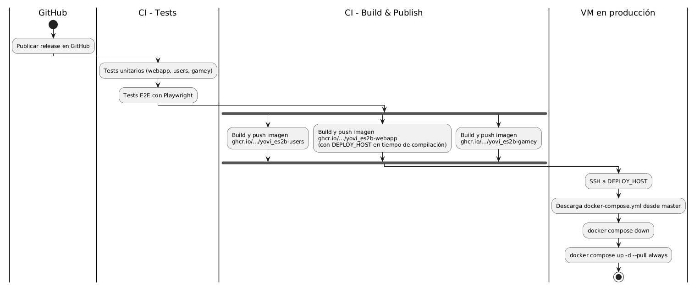
Las imágenes Docker se publican en el registro de contenedores de GitHub (ghcr.io). La VM de producción descarga siempre la última versión de docker-compose.yml directamente desde la rama master del repositorio y lanza los contenedores con --pull always, garantizando que se usen las imágenes recién publicadas.
8. Conceptos transversales
En este apartado se explicarán distintos aspectos de la gestión del proyecto, centrándose en los niveles de prioridad para abordar las tareas, los patrones de diseño seguidos, la testeabilidad y seguridad del proyecto y las librerías usadas. Además, mencionaremos algunos aspectos extras del desarrollo si se acaban implementando..
Por tanto, se recogen decisiones y criterios comunes que atraviesan todo el sistema sin describir una funcionalidad concreta, sino reglas y prácticas que se aplican en frontend, backend, servicio de usuarios y documentación para mantener el proyecto coherente y mantenible.
8.1. Priorización de tareas
Para organizar el trabajo se han usado distintos niveles de prioridad:
-
Prioritaria: tareas imprescindibles para que el sistema funcione y sea evaluable, como la solución de errores de código central o aquellas partes necesarias para el desarrollo del trabajo de otros miembros del equipo o para el funcionamiento básico de la app. Esto incluye lógica principal del juego, la comunicación entre servicios, el registro de usuarios y la navegación básica de la interfaz.
-
Alta: mejoras que aumentan la calidad del producto, como la validación más estricta, los errores personalizados, la incorporación de las estadísticas y el ranking, … También estarían
-
Media: implementación de todos los test y documentación completa, además de extras de implementación como la opción de multijugador
-
Baja: ajustes de acabado, refactorizaciones, mejoras visuales y utilidades adicionales que no bloquean el desarrollo del núcleo. Además, apartados optativos como internacionalización u otros modelos visuales
Esta clasificación nos permitio concentrarnos en un inicio en aquello que afecta directamente al funcionamiento del proyecto y al trabajo de nuestros compañeros, mientras que pudimos dejar para más tarde los cambios que aportan valor, pero no impiden el uso del sistema.
8.2. Patrones y principios de diseño
El código sigue una separación clara de responsabilidades. En general, la interfaz se encarga de mostrar información y recoger acciones del usuario, mientras que la lógica de negocio valida las operaciones y decide el resultado.
Así, los principios más importantes son:
-
Separación de responsabilidades: cada módulo, componente o servicio tiene un propósito concreto.
-
Bajo acoplamiento: los distintos servicios se comunican mediante interfaces simples, lo que facilita cambiar una parte sin romper las demás.
-
Alta cohesión: cada bloque de código agrupa comportamiento relacionado.
-
Código entendible: todas las partes del código han de ser entendidas por todos los miembros del equipo, independientemente de si han participado en su programación o no.
Entre los patrones más visibles en el proyecto destacan:
-
Arquitectura por capas: interfaz (webapp), lógica de aplicación (gameY) y acceso a datos quedan separadas (users).
-
Componente reutilizable: en el frontend, la mayor parte de la interfaz se construye a partir de componentes pequeños y combinables.
-
Controlador/servicio: en los servicios web, los controladores reciben peticiones y delegan el trabajo en servicios más específicos.
8.3. Testeabilidad
La testeabilidad se ha tenido en cuenta desde el diseño para facilitar pruebas unitarias, de integración y de interfaz.
Para ello se han aplicado varias medidas:
-
La lógica principal se mantiene lo más aislada e independiente posible de la interfaz gráfica.
-
Las llamadas a red y a base de datos se concentran en funciones concretas, fáciles de reproducir en pruebas.
-
Las validaciones importantes se realizan en puntos bien definidos, por lo que pueden verificarse con casos de entrada controlados.
-
La interfaz expone elementos identificables y estados visibles, lo que facilita comprobar el comportamiento desde pruebas automáticas.
Esto permite comprobar tanto el comportamiento funcional como la reacción ante errores, respuestas vacías o datos inesperados, lo que también se ve facilitado por la creación de errores personalizados.
8.4. Seguridad
La seguridad del proyecto se aborda desde la validación de entradas y desde la limitación de confianza en el cliente.
Las reglas principales que hemos seguido en la elaboración del proyecto son:
-
El cliente no debe decidir el resultado de una partida ni alterar directamente el estado interno.
-
El servidor valida las acciones relevantes antes de aceptarlas.
-
Las entradas recibidas por red se tratan como no confiables hasta comprobar su formato y contenido.
-
Se evita exponer información sensible en respuestas, logs o mensajes de error innecesarios.
En el caso de autenticación y operaciones de usuario, la aplicación debe asegurar que cada acción se asocia al usuario correcto y que no se pueden reutilizar datos de sesión de forma indebida.
8.5. Librerías y tecnologías utilizadas
El proyecto usa librerías y herramientas distintas según la parte del sistema. Las más destacadas son las siguientes:
-
React: para construir la interfaz del webapp con componentes reutilizables.
-
Vite: para el arranque y empaquetado del frontend.
-
Vitest y Testing Library: para pruebas automáticas de componentes y pantallas.
-
Node.js: para el servicio de usuarios (microservicio users) y utilidades auxiliares del entorno web.
-
Rust: para la lógica principal del juego, priorizando rendimiento y seguridad.
-
Docker: para facilitar ejecución y despliegue en entornos homogéneos.
-
OpenAPI: para documentar los contratos de los servicios.
El uso de estas herramientas busca lograr tanto simplicidad de desarrollo (teniendo en cuenta nuestra falta de experiencia en Rust, Node.js y React) como facilidad de pruebas y mantenimiento a medio plazo.
8.6. Aspectos del desarrollo
Además de lo estrictamente funcional, se han desarrollado otros aspectos que de gran importancia para el proyecto:
-
Documentación: el uso de arc42 para explicar las decisiones y trazar los escenarios.
-
Nomenclatura consistente: se procura mantener nombres comprensibles y homogéneos entre módulos, e incluso a la hora de subir nuestras partes a GitHub.
-
Mantenibilidad visual: la interfaz intenta reutilizar patrones de diseño comunes para que nuevas pantallas se integren sin esfuerzo: buscamos de nuevo la simplicidad en una interfaz intuitiva y familiar.
-
Posibilidad para crecimiento: la estructura del proyecto permite añadir nuevas pantallas, modos de juego o métricas sin rehacer la base, y nos permite añadir los aspectos extra del proyecto.
-
Detectabilidad de fallos: la separación entre servicios y la personalización de errores facilita localizar errores y analizar fallos por capas.
Si en futuras ampliaciones se incorporan nuevas funcionalidades, estos criterios servirán como referencia para mantener la misma línea de calidad.
9. Decisiones arquitectónicas
Son criterios importantes respecto al proyecto que nos puedan costar recursos, no tanto monetarios en este caso, pero más de tiempo y esfuerzo humano. Se explayarán por duplas de términos “Decisión-Consecuencia”.
9.1. Tabla de decisiones
Este apartado trata de explicar que las decisiones tomadas se llevaron a cabo tras una reflexión grupal, conociendo inconvenientes de cada una.
| Decisión | Consecuencia |
|---|---|
Uso de MongoDB como base de datos |
Debemos aprender a usarlo, ya que, a contrario de otras bases de datos, no la hemos usado en otras asignaturas, no usa el lenguaje SQL y tiene métodos propios que deberemos de conocer. |
Uso de React con TypeScript |
Debemos revisar de cómo usar esta biblioteca, ya que, aunque conocemos el lenguaje, en pocas ocasiones se ha utilizado (de momento). |
Uso de Rust |
Debemos aprender a usar este lenguaje, ya que se nos pide desde la propia asignatura. |
GitHub |
Más fluidez al compartir el proyecto, también se nos pide desde la asignatura, ya que se nos dió un esqueleto en esta web y se evaluará desde ahí. |
10. Requisitos de calidad
Se definirán los requisitos de calidad necesarios para que el proyecto esté realmente correcto y finalizado. Nos basaremos en los objetivos de calidad descritos brevemente en el apartado 1.2, y los explicaremos de una forma un poco más desarrollada. También veremos algunos requisitos de menor importancia a destacar, necesarios para considerar en este proyecto. Estos requisitos han influenciado en nuestro trabajo, haciendo que este se ajuste en lo máximo posible a ellos.
10.1. Descripción general de requisitos
-
Funcionalidad (obligatoria): El sistema realiza las funciones obligatorias de creación de usuario e inicio de sesión con otro ya creado. También es posible jugar contra varios bot, que pueden tener diferentes estrategias y se puede ajustar la dificultad, que corresponde con el tamaño del tablero sobre el que se va a jugar. Existe la posibilidad de visualizar estadísticas personales de partidas contra bot: en general, por dificultad o por estrategia. Escenarios Funcionalidad del 1 al 3.
-
Mantenibilidad: Para modificaciones de funcionalidades voluntarias, necesitamos que nuestro programa pueda adaptarse sin tener que tocar el resto de código. Así, al poder crear implementaciones extra, no tendremos que sacrificar el rendimiento del programa o tiempo empleado en hacerlo, entre otras cosas.
-
Usabilidad: Debe poder ser usada para el público objetivo, que en nuestro caso, será apto para todos los públicos. Tendrá que tener una interfaz intuitiva y fácil de usar, con un rendimiento de la aplicación (creación de usuario, jugar un turno, etc.) que sea lo más rápido y correcto posible.
-
Escalabilidad: Este programa será capaz de funcionar en varios dispositivos al mismo tiempo. De esta forma, en un futuro, podría tener la capacidad de ser usado con mayor carga, pero sin perder rendimiento o calidad.
-
Funcionalidad (extra): Existe la capacidad de jugar un jugador contra otro, tanto de forma local, en el mismo ordenador, como de forma remota, con diferentes cuentas. También está la capacidad de poder ver un ranking global, con todos los usuarios registrados. Se ha implementado la capacidad de obtener pistas al jugar un usuario contra un bot, teniendo un límite de 3 pistas por patida. También se proporciona un temporizador en las partidas jugador vs jugador, si no se responde en ese tiempo, se cambiará el turno. Otra implementación es poder aplicar el modo oscuro, pudiendo elegir si usar la aplicación con modo claro (que en principio se había forzado) o en modo oscuro, este apartado está muy relacionado también con la usabilidad. Respecto a la usabilidad, de nuevo, se ha implementado la internacionalización, centrado en idiomas con letras latinas (español, inglés, …). Escenarios Funcionalidad del 4 al 7.
-
Rendimiento: Este programa deberá responder a las peticiones de forma rápida y clara. La rapidez se corresponde con un sistema productivo, y la claridad con el como responde la aplicación y se muestra en el interfaz de usuario.
-
Testeabilidad: Corresponde con la capacidad de que cada parte de la aplicación tenga funcionalidades que pueden ser probadas. Estas pruebas se hacen mediante diferentes tipos de test: los unitarios, que hay uno por microservicio, sobre juego (gamey), sobre el interfaz (webapp) o sobre la base de datos (users); otros test son los test e2e, que prueban el flujo de una aplicación de principio a fin (e2e), que simulan la experiencia real de un usuario, probando que todos los componentes (frontend, backend, base de datos) funcionen conjuntamente; también tenemos las pruebas de carga, que muestran la capacidad del sistema para probar el acceso a la aplicación a la vez para simular una carga de trabajo más similar a la realidad; por último, tenemos las pruebas de usabilidad, que se hacen respecto a usuarios reales para ver su interacción con el juego.
10.2. Escenarios de calidad
| Escenario | Estímulo | Respuesta |
|---|---|---|
Funcionalidad 1 |
El usuario crea un usuario, y juega una partida contra un bot. |
El programa responde rápidamente, creando el usuario y entrando en la página, puede elegir un tamaño de tablero y estrategia y peude jugar. |
Funcionalidad 2 |
El usuario juega una partida contra un bot. |
Al jugar y hacer un movimiento, ofrece una respuesta casi inmediata con el movimiento de otro bot, o con respuesta de fin de partida. |
Funcionalidad 3 |
El usuario puede ver sus estadísticas personales. |
Se pueden ver las estadísticas personales de un usuario propio, con capacidad de ver las estadísticas generales, o separadas por dificultad y estrategia. |
Mantenibilidad |
En un futuro queremos añadir más funcionalidad. |
Añadimos otras funcionalidades y no tenemos que modificar o quitar código creado, añadir o mover código sí serían opciones viables en estos casos. |
Usabilidad |
Estímulos analizados más adelante en el apartado de Test > Usabilidad. |
Respuestas respectivas vistas más adelante en el apartado de Test > Usabilidad. |
Escalabilidad |
Estímulos analizados más adelante en el apartado de Test > Test de carga. |
Respuestas respectivas vistas más adelante en el apartado de Test > Test de carga. |
Funcionalidad 4 |
Un usuario quiere jugar un jugador contra otro de forma local. |
Desde el mismo ordenador, dos personas pueden jugar entre ellos. |
Funcionalidad 5 |
Un usuario quiere jugar un jugador contra otro de forma global. |
Desde diferentes despositivos, dos personas pueden jugar entre ellos. |
Funcionalidad 6 |
Un usuario quiere cambiar de modo claro a oscuro en la aplicación. |
Todo el programa se adapta a lo que necesite el usuario. |
Funcionalidad 7 |
Un usuario quiere cambiar el idioma de la aplicación. |
Todo el programa se adapta a lo que necesite el usuario. |
Rendimiento |
Estímulos analizados más adelante en el apartado de Test > Test de carga. |
Respuestas respectivas vistas más adelante en el apartado de Test > Test de carga. |
Testeabilidad |
Gran cantidad de estímulos analizados más adelante en el apartado de Test. |
Respuestas respectivas vistas más adelante en el apartado de Test. |
11. Riesgos y deuda técnica
En nuestra aplicación Yovi, los riesgos técnicos están asociados principalmente a la arquitectura basada en microservicios, la comunicación entre componentes, la correcta implementación de la lógica del juego y el uso combinado de distintas tecnologías. La identificación y gestión de estos riesgos es altamente importante y nos permite anticipar posibles fallos y aplicar medidas de mitigación para reducir su impacto en el sistema.
Aquí definiremos también mediante duplas de “Título-Descripción” de algunos riesgos que surgidos a lo largo del tiempo de vida del proyecto. Esta tabla estará ordenada en orden de prioridad para tener en cuenta.
11.1. Tabla de riesgos técnicos
| Título | Descripción |
|---|---|
Riesgo de seguridad |
Según como insertemos la base de datos en el proyecto, el producto final puede tener errores en cuanto a responder a ataques de externos. |
Riesgo de persistencia de datos |
Errores en la base de datos pueden provocar pérdida o corrupción de información de usuarios o partidas. |
Riesgos por microservicios |
La interacción entre el frontend, el microservicio User y el microservicio GameY puede generar problemas de integración, como errores en las peticiones, inconsistencias en los datos o fallos de sincronización. |
Riesgo de rendimiento |
El cálculo del siguiente movimiento (especialmente con estrategias avanzadas) puede ser costoso en tiempo de ejecución si no se optimiza adecuadamente. |
Riesgos de despliegue y configuración de contenedores |
El uso de Docker introduce riesgos relacionados con la configuración incorrecta de servicios o problemas de compatibilidad entre entornos. |
Riesgos por gestión de la concurrencia |
Varios usuarios pueden interactuar simultáneamente con el sistema, lo que puede generar conflictos en el acceso a recursos o en la actualización de datos. |
También existen otros riesgos no tan relacionados con los aspectos tecnológicos del proyecto, que definiremos del mismo modo:
11.2. Tabla de otros riesgos
| Título | Descripción |
|---|---|
Riesgo de conocimiento |
Los lenguajes, bases de datos, etc. a usar en este proyecto nos resultan nuevos en su mayoría: ninguno de los miembros del equipo ha trabajado nunca con MongoDB ni con una arquitectura de microservicios. |
Riesgo de comunicación y coordinación |
Como estamos en un trabajo grupal, pueden surgir algunos malentendidos entre los participantes, lo que puede costar en términos de tiempo al intentar entender, modificar o arreglar apartados hechos por otro(s) participante(s), dando lugar a inconsistencias en el desarrollo, duplicidad de trabajo o integración tardía de componentes. |
Riesgo de planificación del tiempo |
Una estimación incorrecta del esfuerzo necesario puede provocar retrasos en el desarrollo del proyecto y en las partes hechas para cada revisión |
12. Tests
Se explicarán los tests hechos para comprobar el funcionamiento del juego.
12.1. Test del microservicio Users
Estos son test serán ejecutados después de cada actualización al programa principal. En este caso, se probará la capacidad de la base de datos para todo lo que tenga que ver con usuarios, desde creación y registro de usuario, hasta la obtención y gestión de estadísticas. Estos test no son pruebas respecto al usuario, a la interacción con este, si no al manejo de la base de datos, de que se llama correctamente a los endpoint y lo que devuelve es correcto, sea error o no. Para ello, separamos los test por funcionalidad en clases users-service-[funcionalidad].test.js, haciendo que en cada una pruebe test con casos específicos de cada tipo.
12.1.1. Tests individuales
Estos test se ejecutaron en la terminal de forma local desde la carpeta /users/test con el comando > npx vitest run --reporter=tree, y de ahí se han tomado las capturas, excepto en el test de coverage.
-
users-service-login: Que prueba que un usuario ya creado se registre bien, además de contener los casos donde faltan datos al llamar el endpoint o que el inicio de sesión falló por contraseña incorrecta.
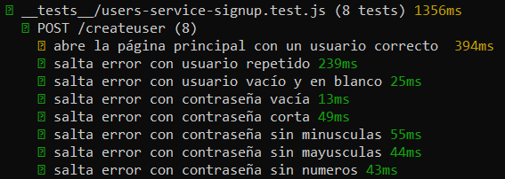
-
users-service-signup: Que prueba que un usuario se puede iniciar sesión, si los datos son correctos, y que lanza en error en su defecto.
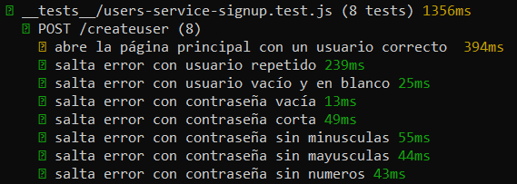
-
users-service-initmatch: Que prueba que el inicio de una partida es correcto, o lanza error cuando debería.
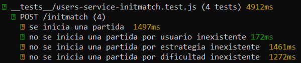
-
users-service-endmatch: Que prueba que el fin de una partida ganada es correcta, o lanza error cuando debería.
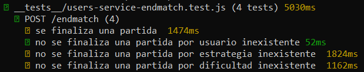
-
users-service-statistics: Que prueba que la recuperación de estadísticas, tanto las totales como las parciales, funciona de forma correcta, o lanza error cuando debería.

-
users-service-ranking: Que prueba que la correcta creación y distribución del ranking de usuarios, tanto el ranking personal como el general por partidas, dificultad y estrategia. Asegura que es capaz de ordenar por el número o por el porcentaje adecuado, y responde correctamente en caso de error.
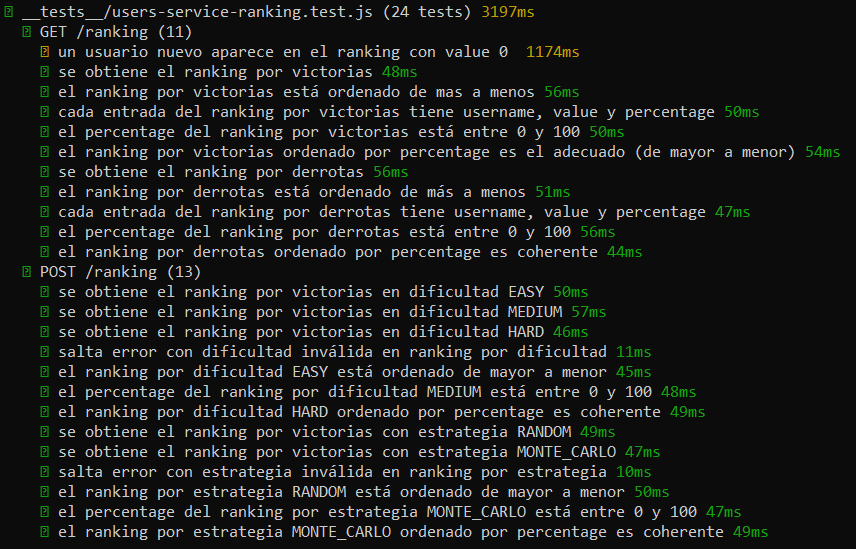
-
users-service-model: Que prueba el modelo de usuario, verificando que se construye correctamente con
username,passwordycreatedAt, y que la fecha se asigna por defecto cuando no se proporciona. -
users-service-controller: Que prueba el controlador de usuarios con mocks del servicio, validando respuestas HTTP de éxito y de error en operaciones clave como inicio de sesión, creación y obtención de usuario.
-
Test de Coverage: Que comprueban que el código usado en la aplicación esté probado en los test anteriores. En este caso, la captura está sacada de las Actions de GitHub, más específicamente en el Build → Merge pull request #109 from Arquisoft/JimenaIssue29 #213.
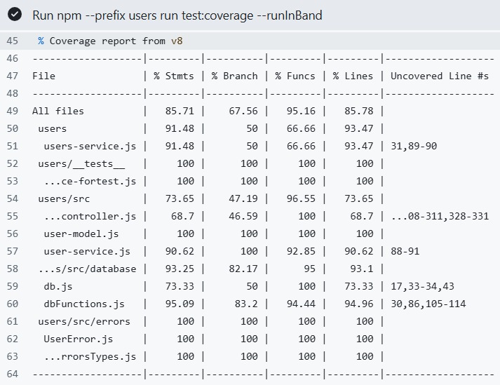
12.1.2. Resultados finales
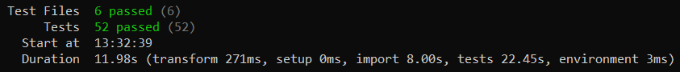
12.2. Test del microservicio WebApp
Estos son los considerados test de frontend, y serán ejecutados después de cada actualización en la interfaz del sistema. Para este caso, se prueba la capacidad de nuestras pantallas de responder adecuadamente a las interacciones con el usuario, navegando como es esperado. No tiene en cuenta aspectos relacionados con la base de datos o el backend, sino que solo comprueba aspectos de estilos, organización, interacción, … Para estas pruebas, separamos los test por funcionalidad en clases Webapp-[Pantalla].test.tsx, haciendo que en cada una pruebe test con casos específicos de cada tipo.
-
WebApp-HomeScreen.test: Prueba que la pantalla inicial de bienvenida sea la adecuada y tenga el testo que esperamos, mostrando un panel para jugar contra la máquina y otro para jugar contra otro usuario. Además, se asegura que todos los botones funcionen según lo esperado, navegando, seleccionando o mostrando mensaje de error cuando sea necesario.
-
WebApp-Appheader.test: Prueba que el encabezado de la aplicación se renderice correctamente (logo y botón de menú), que el menú desplegable se abra y cierre como corresponde, que las opciones internas respondan bien (tema, cierre de sesión) y que el header no aparezca en pantallas donde no debe mostrarse.
-
WebApp-Board.test: Prueba la lógica visual y de interacción del tablero, validando carga inicial, número de celdas según dificultad, bloqueos de interacción, gestión de turnos y actualización del estado del juego tras realizar movimientos.
-
WebApp-GameScreen.test: Prueba que la pantalla del juego responda como es debido, mostrando la información de la partida, representado correctamente cuando este elije una casilla, navegando como se espera si el usuario decide terminar la partida, …
-
WebApp-GameInfo.test: Prueba que la zona de información de partida (estado, mensajes y datos auxiliares) refleje correctamente el contexto del juego y se actualice cuando cambian las propiedades recibidas.
-
WebApp-EndGameScreen.test: Prueba que la pantalla final, la que sale cuando se gana o se pierde el juego (sin pulsar al botón terminar) aparezca con la información adecuada y correspondiente a la partida, además de que los botones de navegación funcionen correctamente.
-
WebApp-InitialScreen.test: Prueba que la pantalla para iniciar sesión tenga la información adecuada, responda correctamente a los datos que introduce el usuario y navegue como se espera a la pantalla de registro o a la de inicio/bienvenida
-
WebApp-SignUpScreen.test: Prueba que la pantalla registrar un nuevo usuario cuente que la información y textos esperados, responda de forma correcta a los datos que introduce el usuario y navegue como se espera que haga a otras pantallas.
-
WebApp-StatsScreen.test: Prueba que las pantallas de las estadísticas representen los datos como deberían, tanto para el caso de las estadísticas normales como para las filtradas, y que la navegación entre páginas se de según lo esperado.
-
WebApp-RankingScreen.test: Prueba que las pantallas de ranking muestran la información de la manera esperada en el caso de el ranking personal y de los rankings filtrados, respetando los estilos y el correcto funcionamiento de cada botón para la representación de los datos y para la navegación.
-
WebApp-Timer.test: Prueba el componente de temporizador, comprobando la representación del tiempo y su actualización en función del estado de la partida y del paso del tiempo.
-
WebApp-Theme.test: Prueba el contexto de tema (claro/oscuro), su alternancia y la persistencia de preferencias para asegurar un comportamiento consistente en toda la interfaz.
12.3. Test de carga
Estos test analizan el rendimiento de la aplicación y su comportamiento respecto a la ejecución. Simularán ciclos de ejecución, y se verá como responde la aplicación dados cierto parámetros en relación a ciertos límites. Todo ello, la herramienta, las simulaciones o escenarios, el análisis de resultados y conclusiones se describirán más adelante.
12.3.1. Diseño de test
El siguiente apartado se corresponde con como fueron diseñados los test de carga.
Escenarios |
Creación de usuario |
Este escanario se refiere a la capacidad del programa para crear usuarios, y su acceso a base datos para guardar el usuario. Para esto, debemos tener un .csv, que creará la cantidad de usuarios pedidos de forma automática. En esta simulación también se meten los usuarios en la base datos, pero se eliminarán al final de la ejecución de los test para evitar problemas de rendimiento en el despliegue general de la aplicación. Para el análisis de este apartado se debe simular de forma lo más parecido a la realidad un flujo normal de creación de usuario, por eso el acceso a la base no se mockea. |
Ciclo de ejecución (sin jugar) |
Siguiendo con el escenario anterior, el rendimiento analizado en este caso es probar un ciclo de ejecución, cercano a una ejecución real. En este caso, se prueba el siguiente ciclo de peticiones: login > inicio de partida > fin de partida (que se ejecuta cuando se gana una partida) > ver estadísticas personales > ver el ranking global. Estas opciones son las que acceden a la base de datos, ya que son las funciones que todas acceden al mismo sitio, y son las que pueden hacer que el rendimiento baje en ejecuciones simultáneas. |
|
Parámetros de carga |
Nº de usuarios |
Como hemos hecho varios análisis, con diferentes escenarios, se ha probado con diferente cantidad de usuarios que "realizan" el ciclo de ejecución. Se ha probado con 50, 100 y 200 usuarios, pero el resto de los escenarios, creación o ciclo, serán constantes respectivamente. |
Ejecución |
La ejecución en todos los escenarios, en los tres casos de usuarios permanecerá constante. Cada ejecución individual, cada usuario, realizará de forma secuencial, para una simulación aproximada a la realidad. Es decir, todos los usuarios seguirán el ciclo de vida que se ha indicado, con los mismos pasos. También, tenemos la ejecución global, que nos dice que la ejecución en cada flujo será concurrente, lo que significa que todos los usuarios intentarán acceder más o menos al mismo tiempo a la misma base de datos con peticiones similares. Por último, respecto a los escenarios, se realizarán de forma que cada escenario se ejecutará por separado. Como lo ejecutamos en la terminal, primero debemos ejecutar la de creación de usuarios, más que nada para optimizar nuestro tiempo, y luego ejecutar el escenario del ciclo de vida. Ambos escenarios serán independientes a la hora de medir su rendimiento, pero el ciclo de vida depende de la creación de usuarios para usarlos desde la base de datos. |
|
Valores del análisis |
Intervalos de tiempos de análisis |
Para tener un espacio controlado, situaremos unos tiempos límites para ajustar los resultados obtenidos. Como límite inferior, tomamos el intervalo de 0ms a 800ms, este límite indica las peticiones que se responden de forma rápida, nuestro objetivo es tener la mayor cantidad de peticiones en este intervalo. El límite superior es cuando supera los 1200ms, si una petición supera este límite, debería tenerse en cuenta, ya que puede producir fallos graves de rendimiento a largo plazo. El intervalo intermedio, entre los 800ms y 1200ms, es donde podríamos considerar reducir el rendimiento, pero en principio no tenedría que considerarse prioridad principal a arreglar. |
Tiempos de respuesta |
Los tiempos de respuesta indican el tiempo en responder de cada petición, y son los que se analizarán para medir el rendimiento general de la aplicación. |
|
Fallos/KOs |
Indican las peticiones que no se han realizado de forma correcta, no se ejecutaron de manera correcta o devuelven un error al realizarse. En caso de la existencia de alguno, aunque sea de uno solo, sería prioridad máxima el modificar el programa para su arreglo inmediato. |
|
Otros |
Eliminación de usuario |
Como la creación de usuarios se realiza mediante unos test, y todos ellos acceden directamente a la base de datos, estos usuarios se deben eliminar para que la base de datos no se llene de usuarios de prueba. Este borrado se hace con un comando especial, aplicado también desde la terminal y es súper importante de hacer después de probar ambos escenarios. Como la opción de borrado no está disponible para los usuarios, si no que es exclusiva de los test, no se prueba en un escenario, por eso se ejecutará a parte. |
12.3.2. Herramienta
La herramienta que hemos usado para este análisis de carga es Gatling, framework ofrecido por la asignatura para realizar estas pruebas de rendimiento. Para estos test se creó un proyecto a parte, indirectamente enlazado con este proyecto de forma local. Esto significa que se ha creado como un programa no incluido en las carpetas de este, pero mediante el uso de Docker, que despliega la aplicación de forma local, y la terminal del sistema usado, que en este caso fue Windows, se ejecutarán los test de carga. Los resultados de estos se ofrecen en una carpeta en este nuevo proyecto en carpetas, que también fueron incluidas, por si se quisiera realizar un análisis más exhausto, en la carpeta /gatling. Para visualizarlos de forma clara y accesible, podemos acceder a interfaces mediante .html, que se podrán abrir con un navegador. Estos interfaces se separan en "index.html", que realiza un análisis general del test, y "req_*.html", que muestra de forma más exhausta, el estudio de cada petición individualmente.
12.3.3. Resultados
-
Creación de 50 usuarios
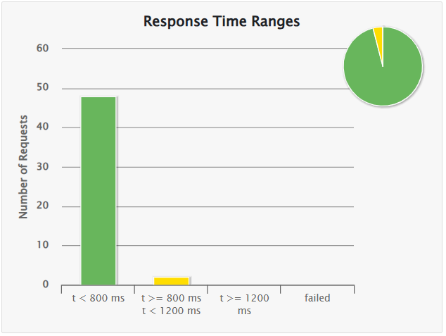
-
Ciclo de vida de 50 usuarios
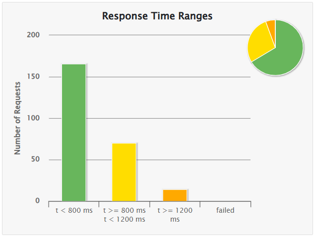
-
Login (50 usuarios)
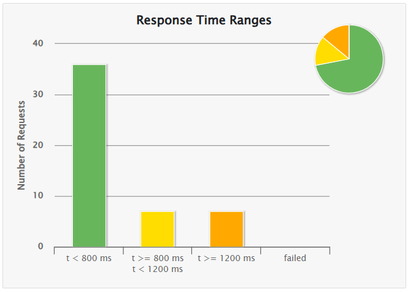
-
Inicio de partida (50 usuarios)
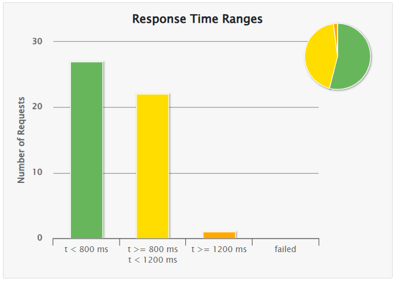
-
Fin de partida (50 usuarios)
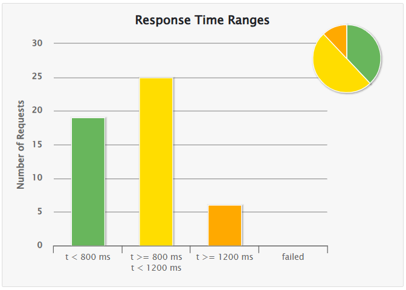
-
Visualizar estadísticas (50 usuarios)
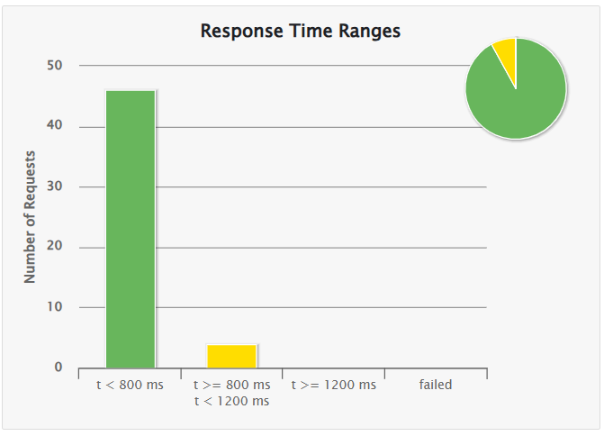
-
Visualizar ranking (50 usuarios)
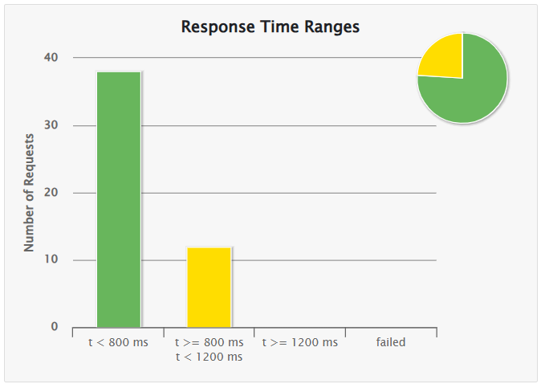
-
-
Creación de 100 usuarios
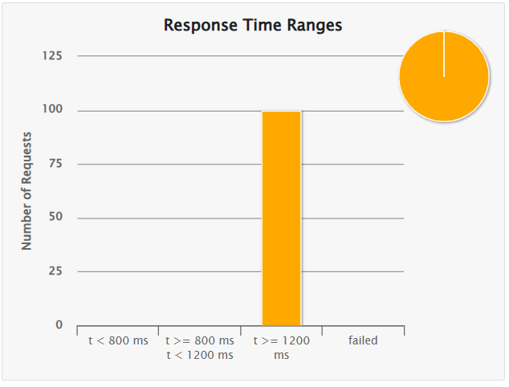
-
Ciclo de vida de 100 usuarios
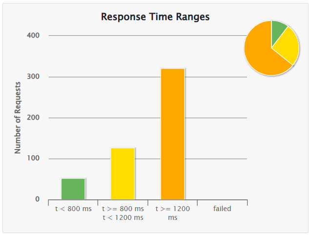
-
Login (100 usuarios)
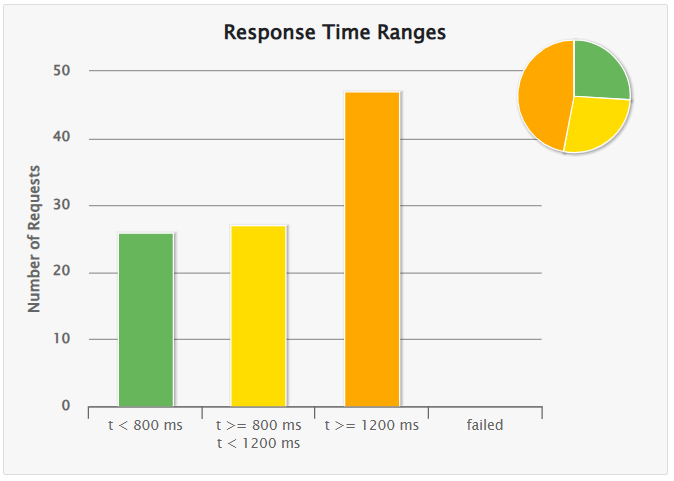
-
Inicio de partida (100 usuarios)
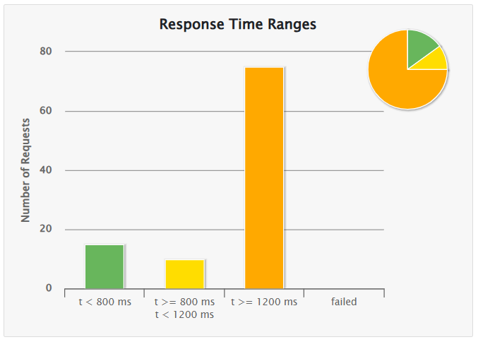
-
Fin de partida (100 usuarios)
-
Visualizar estadísticas (100 usuarios)
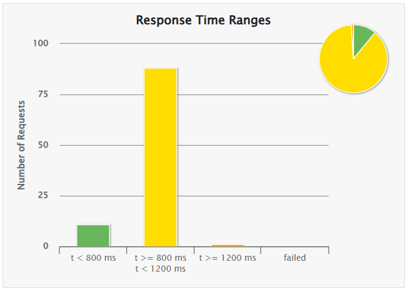
-
Visualizar ranking (100 usuarios)
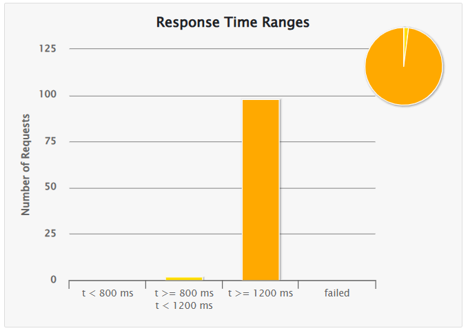
-
-
Creación de 200 usuarios
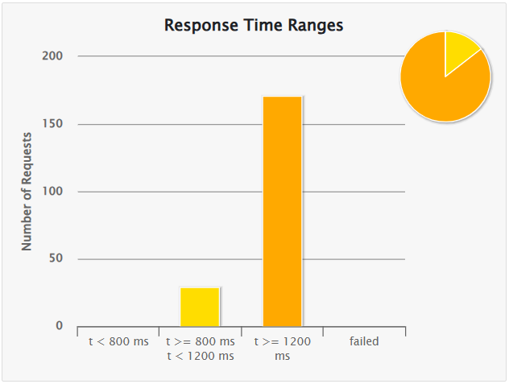
-
Ciclo de vida de 200 usuarios
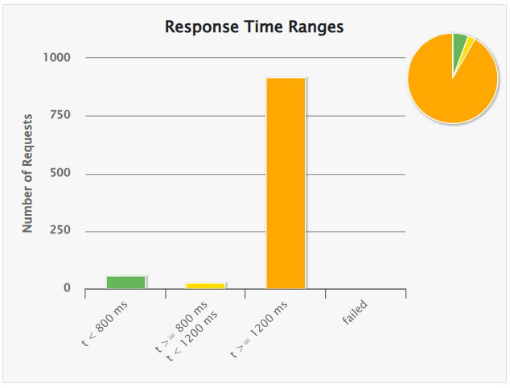
-
Login (200 usuarios)
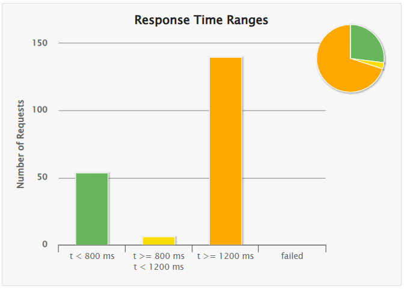
-
Inicio de partida (200 usuarios)
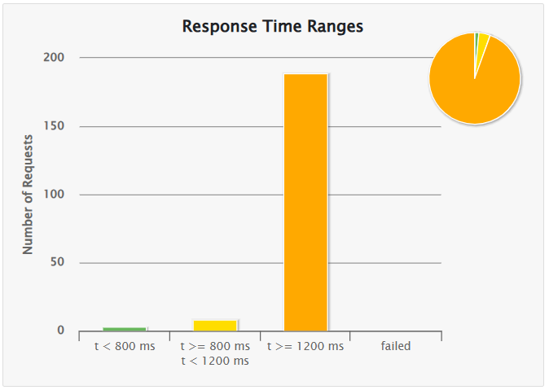
-
Fin de partida (200 usuarios)
-
Visualizar estadísticas (200 usuarios)
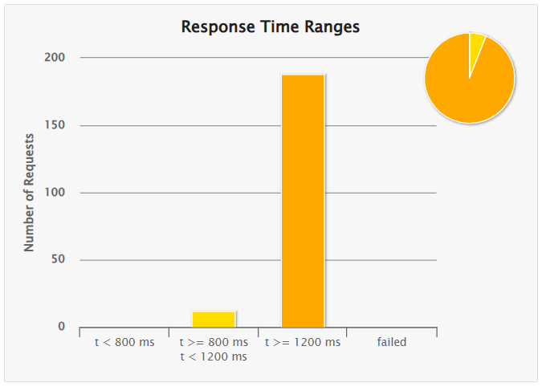
-
Visualizar ranking (200 usuarios)
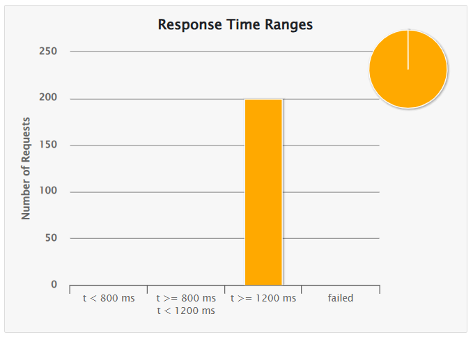
-
12.3.4. Conclusiones
Dados los resultados anteriores, podemos obtener varias conclusiones importantes.
-
No existen errores que causen que una petición pare. Esto implica que, aunque en ciertos casos pueda tardar más o menos en acceder a la base de datos y responder, en ninguna circunstancia se sufre un error con resultado catastrófico al punto de parar el flujo de la aplicación. Toda petición fue respondida.
-
Podemos ver que con 50 usuarios, la aplicación, en ambos escenarios, propones unos datos muy favorables, teniendo la mayoría de peticiones en el primer intervalo, por lo que el rendimiento no es un gran problema a resolver.
-
Con 100 usuarios también vemos que la creación de usuarios puede ser bastante más costosa en términos de rendimiento, incluso superando el escenario con 200 usuarios. Además, también es notable su aumento de ejecución en el flujo del ciclo de vida.
-
Por último con 200 usuarios vemos una gran cantidad de peticiones en el último intervalo. En este caso, sí que deberíamos mirar de forma más exhaustiva el rendimiento con los 200 usuarios concurrentemente, en especial si queremos lanzarlo como aplicación más profesional.
-
Viendo las ejecuciones individuales de cada tipo de petición observamos que las peticiones más costosas en términos de tiempo son las que modifican la base de datos, creación de usuario, inicio y fin de partida, lo que puede ser razonable, ya que no sabemos a ciencia cierta como va la base de datos por debajo. Pero, en cuanto al resto, login, estadísticas y ranking vemos un coste relativamente alto para la obtención de datos.
Como conclusión final, si quisiéramos una escalabilidad más profesional, deberíamos intentar mejorar el rendimiento. Para ello, crearemos una nueva issue (Issue 118) para la mejora del rendimiento. En esta issue especialmente nos centraremos en los endpoint que no modifican la base de datos, como el login o ranking global.
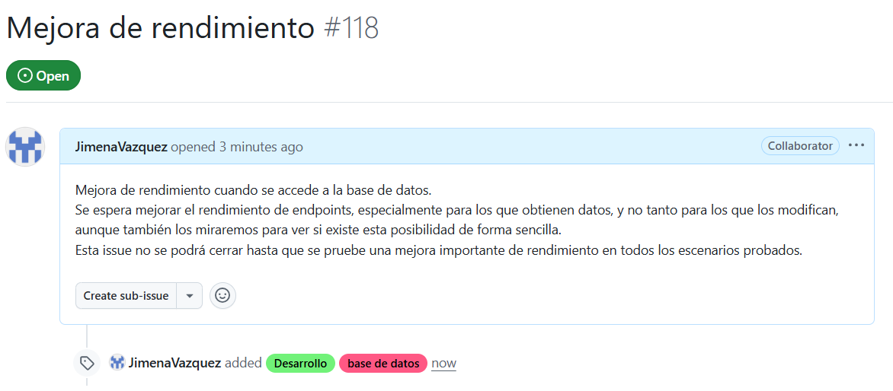
13. Glosario
Se explicarán varios conceptos necesarios para comprender la documentación y el producto final de forma completa.
| Concepto | Definición |
|---|---|
Algoritmo de Monte Carlo |
Algoritmo complejo usado en los bots de nuestra aplicación que evalúa las decisiones (o movimientos) del usuario mediante expresiones matemáticas complejas y costosas para elegir sus movimientos y poder ganar. |
Entorno de ejecución (NodeJS) |
Es una plataforma que facilita la ejecución de programas directamente desde el sistema operativo, y que funcione de forma escalable y concurrente. |
Microservicio |
Parte de una aplicación (servicio) que maneja esa parte y se comunica con el resto para crear un producto mayor sin necesidad de que esté entero en un solo lenguaje. |
Pruebas de carga |
Pruebas no funcionales para evaluar el comportamiento de la app con una mayor cantidad de usuarios o transacciones actuando al mismo tiempo. Pretenden verificar el rendimento en condiciones normales (tiempos de respuesta, recursos, …) |
Test E2E |
Tipo de test de extremo a extremo, que pretende abarcar todos los procesos de la aplicación, considerando todos los componentes e iteracciones. Por tanto, son las pruebas que verifican que todo el flujo de la app sea correcto |
WebApp |
Aplicación ejecutada desde algún navegador. |